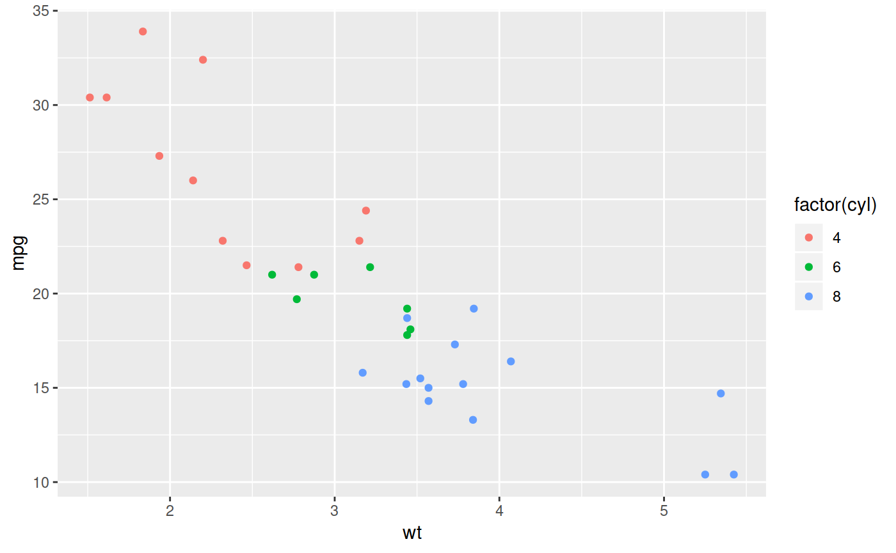
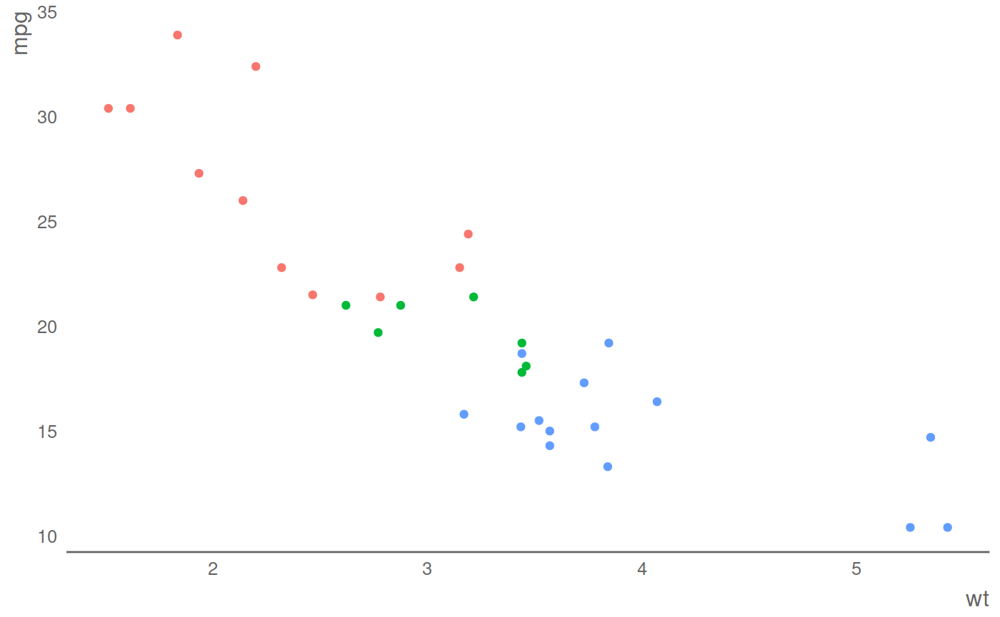

A package for applying a gov.uk style to plots created in the R package ggplot2. This package is in an early stage of development; the intended end point is that it should be fully compliant with the gov.uk style guide.
This package turns plots from this:

Basic ggplot2 plot
to this:

govstyle plot
The best source of docmentation is the vignettes.
Installation
To install, the package devtools is required, and can be installed with install.packages('devtools').
govstyle can then be installed using devtools::install_github('ukgovdatascience/govstyle'). Some users may not be able to use the devtools::install_github() commands as a result of network security settings. If this is the case, govstyle can be installed by downloading the zip of the repository and installing the package locally using devtools::install_local(<path to zip file>).
Functions
-
theme_gov(): Theme to be applied to plots produced in ggplot2 to give a government statistics publication feel. -
gov_cols: A vector of the gov.uk extended palette. -
check_pal(): Display the extended gov.uk palette in a pie chart.
Examples
See Vignette for in depth usage examples.
theme_gov
library(ggplot2)
library(dplyr)
#devtools::install_github("ukgovdatascience/govstyle")
library(govstyle)
